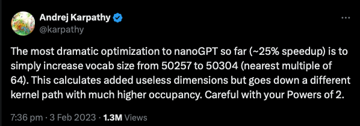
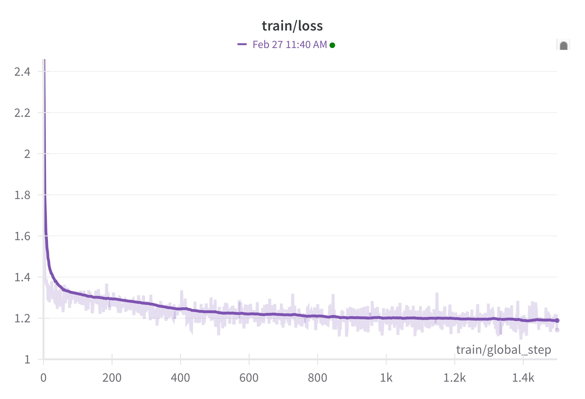

2 Training our first DNA Language Model
In this chapter, we’ll train a DNA language model. To do a full training run, you’ll need a newer MacBook (±24 hours), a gaming PC with a GPU (10-12 hours), or Google Colab with the A100 GPU (±6 hours).
A Google Colab notebook to train the model in the cloud (for cheap/free) is available here.
If you don’t have the compute to run your own training run, you can download a trained version of DNABert for use in the next few chapters.
All scripts for this chapter are found here: https://github.com/MichelNivard/Biological-language-models/tree/main/scripts/DNA/Chapter_2
2.1 Introduction
Now that we have collected and formatted a DNA dataset in Chapter 1, we can proceed to train a language model using the (Modern)BERT model architecture. In this chapter, we will walk through the process of tokenizing DNA sequences, configuring a BERT model, and training it using the Masked Language Modeling (MLM) objective.
We will cover the utility and rationale behind DNA language models, and we’ll dive into the key concepts behind tokenization. Then we’ll disucss key parts of the acrchitecture the BERT model, and the logicl of masked language model(MLM) training, before diving into the Python script that trains the actual model. Note that while we briefly discuss key elements of the model architecture like attention we dont get into the nitty gritty just jett to make sure the chapters arent to dense, we’ll discuss individual parts fo the transformer model achrchitecture in far greater detail in later chapters.
2.2 Why would we train DNA language models?
For a full review of the utility of language models, you should dig into the literature. I can recommend (Benegas et al. 2025) for example. Genomic language models (gLMs) apply AI techniques to DNA sequences, enabling breakthroughs in variant effect prediction, sequence design, and genomic analysis. After we learn about DNA language model we’ll briefly review the current offerings available in Chapter 6.
Like larger language models like ChatGPT, DNA language models (DNA-LM) have “emergent properties”. If you train an DNA-LM, or a genomic Language models (gLM). which strictly speaking a slightly more general class of models than DNA-LMs, so also RNA or protein LMs, on the reference genome sequence of humans and various other species, then that model is able to detect damaging mutations. It can do so without ever being trained on mutations explicitly as damaging mutations are very unlikely to occur across the many references genomes on which the model is trained(Benegas, Batra, and Song 2023). To assess functional constraints, a widely used metric is the log-likelihood ratio (LLR), the ratio of log likelihoods of the various alleles given the model. This measures the probability of a nucleotide variant appearing in a given context, with lower probabilities indicating potential deleterious effects. This application will be one of the examples I use throughout, simply because my experience in genetics aligns with it.
Another key application are types of “transfer learning”, where pre-trained DNA-LMs improve predictions of gene expression, regulatory sequence structure, or chromatin accessibility of a section of DNA in a specific tissue. However, training effective models is difficult due to the vast, complex, and often non-functional nature of genomes. Unlike protein models, DNA-LMs struggle with limited genomic diversity in training data and require sophisticated benchmarks for evaluation.
Current state of the art models(Nguyen et al. 2024) are trained on hundreds of thousands of genomes and focus on improving long-range genomic interactions (i.e. are able to generate realistic genome segments of > 1 million bases long), integrating multi-modal biological data (are effectively joint DNA/RNA/Protein models), and refining sequence design for practical applications. DNA-LM or gLMs hold great promise for revolutionizing genome research, advancing genetic disease understanding, and enabling synthetic biology innovations.
2.3 Understanding Tokenization
2.3.1 What is a Tokenizer?
A tokenizer is a fundamental component of any language model. Language models are essentially large multinomial models that predict the next token in a sequence based on previous tokens, or predict a masked token using the surrounding tokens. Since machine learning models operate on numerical representations, tokenized text must be converted into integers, which serve as indices for lookup in a vocabulary.
These integers, however, have no inherent numeric value—they simply act as categorical labels that the model learns to associate with semantic meaning. For example, if we tokenize the sentence:
“The quick brown fox jumps over the lazy dog”
at the word level, we might obtain a numerical sequence like:
[4, 123, 678, 89, 245, 983, 56, 4564]
where each number corresponds to a word based on a pre-defined tokenization dictionary, such as:
{"the": 4, "quick": 123, "brown": 678, "fox": 89, "jumps": 245, "over": 983, "lazy": 56, "dog": 4564}Similarly, for DNA sequences, each nucleotide (A, T, C, G) is assigned a unique integer ID.
2.3.2 Our DNA Tokenizer
Our tokenizer uses a character-level approach, where each nucleotide is assigned a unique integer ID. Special tokens are also included for various purposes:
[UNK](unknown token)[PAD](padding token for equal-length sequences)[CLS](classification token, useful for downstream tasks)[SEP](separator token, used in tasks like sequence-pair classification)[MASK](used for masked language modeling training)
Python Code:
import torch
from tokenizers import Tokenizer
from tokenizers.models import WordLevel
from tokenizers.pre_tokenizers import Split
from transformers import PreTrainedTokenizerFast
# --------------------------------
# 1. DNA Tokenizer with Full FASTA Nucleic Acid Code
# --------------------------------
# Define vocabulary to include all FASTA nucleotides and symbols
dna_vocab = {
"A": 0, "T": 1, "C": 2, "G": 3, "N": 4, "U": 5, "i": 6, # Standard bases + Inosine
"R": 7, "Y": 8, "K": 9, "M": 10, "S": 11, "W": 12, # Ambiguous bases
"B": 13, "D": 14, "H": 15, "V": 16, # More ambiguity codes
"-": 17, # Gap character
"[UNK]": 18, "[PAD]": 19, "[CLS]": 20, "[SEP]": 21, "[MASK]": 22
}
# Create tokenizer
tokenizer = Tokenizer(WordLevel(vocab=dna_vocab, unk_token="[UNK]"))
tokenizer.pre_tokenizer = Split("", "isolated") # Character-level splitting
# Convert to Hugging Face-compatible tokenizer
hf_tokenizer = PreTrainedTokenizerFast(
tokenizer_object=tokenizer,
unk_token="[UNK]",
pad_token="[PAD]",
cls_token="[CLS]",
sep_token="[SEP]",
mask_token="[MASK]"
)2.3.3 Other Tokenization Strategies for DNA, RNA, and Proteins
While character-level tokenization is effective, other tokenization approaches can offer different tradeoffs:
2.3.3.1 Byte Pair Encoding (BPE)
BPE is widely used in NLP and allows frequently occurring patterns to be merged into subword units. While BPE could be useful for repetitive genome sequences, it may not capture biologically meaningful units.
2.3.3.2 K-mer Tokenization
K-mer tokenization groups nucleotides into fixed-length substrings (e.g., 3-mers like “ATG”). This approach retains local sequence structure but can lead to a large vocabulary size.
2.3.3.3 Tiktoken and Similar Models
Some modern tokenization methods, such as Tiktoken, optimize speed and efficiency by precomputing merges. These are often optimized for large-scale NLP tasks but could be adapted for biological sequences.
Choosing the best tokenizer depends on the specific modeling task. For example, RNA secondary structures or protein folding models might benefit from more complex tokenization strategies.
Source: RPubs Tokenization Review
2.4 Loading and Tokenizing the DNA Dataset
2.4.1 Understanding the Dataset
We will use a pre-existing dataset, Human-genome-CDS-GRCh38, which contains coding sequences from the human genome.
2.4.2 Tokenizing the Dataset
To prepare the dataset for training, we must apply the tokenizer to each sequence while ensuring:
- Sequences are truncated or padded to a fixed length (512 tokens)
- Unwanted columns are removed
Python Code:
from datasets import load_dataset
dataset_name = "MichelNivard/Human-genome-CDS-GRCh38"
dataset = load_dataset(dataset_name)
column_name = "sequence"
def tokenize_function(examples):
return hf_tokenizer(examples[column_name], truncation=True, padding="max_length", max_length=512)
# Tokenize dataset
tokenized_dataset = dataset.map(tokenize_function, batched=True, remove_columns=[column_name])2.4.3 Saving and Preparing the Dataset for Training
Once tokenized, we save the dataset for efficient access during training.
Python Code:
tokenized_dataset.save_to_disk("tokenized_dna_dataset")2.5 Understanding BERT and Masked Language Modeling (MLM)
2.5.1 What is BERT?
BERT (Bidirectional Encoder Representations from Transformers) is a powerful transformer-based language model. Unlike traditional left-to-right models, BERT learns bidirectional context, allowing it to understand sequences more effectively. for genomics, bidirectional models have proven more effective, while for natural language it appears auto-regressive “next work prediction” models appear most effective.
Returning to our earlier example sentence:
“The quick brown fox jumps over the lazy dog”
BERT does not process words one at a time but instead considers the entire sequence simultaneously. This bidirectional approach allows BERT to infer missing words based on context from both directions. Te inference is effectively a predicting of a specific token, in genomics models a base or amino-acid, and since the predicting results in a probability for each possible token, this fairly naturally translates into predicting the probability of a mutation, or th probability of the presence of a regulatory sequence motif near a specific gene.
2.5.2 What is Masked Language Modeling (MLM)?
MLM is a self-supervised learning objective where the model learns by predicting missing tokens in a sequence. During training:
- Some tokens are randomly replaced with
[MASK] - The model must predict the original token based on surrounding context
For example, if we mask the word “fox” in our sentence:
“The quick brown
[MASK]jumps over the lazy dog”
BERT will analyze the remaining words and attempt to predict “fox.”
This technique enables BERT to learn useful representations without requiring labeled data.
2.5.4 Defining the BERT Model for DNA Sequences
While the “quick brown fox” example helps us understand how BERT processes natural language, our goal is to apply the same principles to DNA sequences. Instead of predicting missing words in a sentence, we want our model to learn biological patterns and genomic structure by predicting masked nucleotides within DNA sequences.
In DNA modeling, understanding sequence context is just as critical as in language modeling. Just as BERT learns that “fox” fits within a given sentence structure, our model should learn that specific nucleotide sequences appear in biologically meaningful patterns. This could involve recognizing gene coding regions, regulatory motifs, or conserved sequence elements across different genomes.
To accomplish this, we define a custom BERT model designed specifically for processing DNA sequences. Unlike traditional text-based models, our DNA BERT model uses a character-level vocabulary of nucleotides (A, T, C, G) and special tokens to represent sequence structure. By leveraging masked language modeling (MLM), the model will learn to predict missing nucleotides based on surrounding context, allowing it to capture meaningful genomic features.
The max_position_embeddings defines the longest sequence the model can process at once, which is crucial for biological sequences like genomes or proteins that can vary widely in length. To help the model understand where each token appears in the sequence, position embeddings are added to the token embeddings, giving the model a sense of order and distance, which is especially important when analyzing long-range interactions, like regulatory elements controlling distant genes.
With this in mind, let’s move forward and define a standard BERT architecture, which we’ll apply to DNA sequences. Because we’ll train a standard model, we can basically get away with defining the dimensions of certain aspects of the model. Recall in the chapter on the software stack we discussed the general outlien of a machinne learning model? We coudl write a script like that for a BERT model, but the huggingface transformers library proviced standard models, while the Trainer class abstracts away ahaving to write a training loop.
Python Code:
from transformers import ModernBertConfig, ModernBertForMaskedLM
config = ModernBertConfig(
vocab_size=len(dna_vocab),
hidden_size=256,
num_hidden_layers=8,
num_attention_heads=8,
intermediate_size=512,
max_position_embeddings=512,
type_vocab_size=1,
)
config.pad_token_id = dna_vocab["[PAD]"]
model = ModernBertForMaskedLM(config)The keenly eyed among you see a lot of powers of 2, 8 is 2^3, 256, 512 are also powers of two, etc. Computer memory encodes in bits and bytes, and is designed around powers of two. Building matrices that are powers of 2, 16, 32, 64, etc. makes them fit in memory more efficiently, and this can have serious consequences for training efficiency (see Figure 1).

2.5.5 Configuring Training for DNA BERT
Now that we have defined our BERT model for DNA sequences, we need to set up the training process. This involves specifying various training hyperparameters, handling masked language modeling (MLM) data, and preparing for efficient learning.
Unlike traditional NLP tasks where models are trained on massive text corpora, training on DNA sequences presents unique challenges. The structure of genomic data, sequence length, and biological patterns all influence how the model learns. Our configuration is again rather general and not yet tuned to DNA or biological data. If you would scale this model, you’d likely have to drop the learning rate down, for example. In “production” hyperparameter optimization becomes super important when you train a large model on all your data; each run might be costly, and setting optimal hyperparameters can lead to serious gains in training results.
2.5.6 Setting Training Parameters
To train our DNA BERT model, we use the Hugging Face TrainingArguments class, which allows us to define key training settings. These include:
- Batch size: We set a batch size (
per_device_train_batch_size) of16for both training and evaluation. This determines how many sequences are processed at once. - Logging & Saving: We log loss every
50steps (logging_steps) and save model checkpoints every100steps to monitor training progress. - Learning Rate: We use a learning rate of
5e-5(learning_rate), a common choice for transformer models that balances learning speed and stability. - Weight Decay: A value of
0.01is used to prevent overfitting by applying L2 regularization to model weights. - Training Steps: The model is trained for
4000steps (max_steps), though on the Google Colab code I ran in the cloud, I trained for 2 whole epochs over all data (num_train_epochs = 2), which is a more precise way to ensure the model sees all the data twice. - Model Saving: The model checkpoints are stored in
./bert-dna, allowing us to resume training from a checkpoint if needed (after a computer crash, or after the model going off the rails, etc.).
Python Code:
training_args = TrainingArguments(
output_dir="./bert-dna",
overwrite_output_dir=True,
logging_steps=50, # Log loss every step
save_steps=100,
save_total_limit=2,
per_device_train_batch_size=16,
per_device_eval_batch_size=16,
max_steps=4000,
learning_rate=5e-5,
weight_decay=0.01,
push_to_hub=False,
report_to="none", # Disables wandb logging, can enable if you have a wandb account so you can track your training
)While I have enabled it here, I can recommend tracking your training runs on wandb. Go to wandb.ai (w and b meaning weights and biases, the core parameters in AI models) to make a free account. Now to some extent, this is like Strava but for AI, and there is a risk of obsessing over the training metadata. But if you find yourself with a limited amount of compute, or expensive compute paid per minute, it makes a lot of sense to track big training runs in real time so you can intervene. If the run crashes, you can restart, or abort the node so you aren’t paying for an expensive GPU node that’s no longer training.
2.5.7 Preparing for Masked Language Modeling (MLM)
Since we are training our DNA BERT model using masked language modeling (MLM), we need to handle introducing masked tokens properly. This is done using the DataCollatorForLanguageModeling, which:
- Randomly masks nucleotides in the training sequences.
- Creates
labelsautomatically, meaning the model learns by trying to predict these labeled masked tokens. - Uses a masking probability of 5%-15%, ensuring that a small but meaningful portion of the sequence is masked during training.
By applying MLM, we allow the model to generalize nucleotide relationships and capture sequence dependencies, just like how BERT learns relationships between words in text.
Python Code:
data_collator = DataCollatorForLanguageModeling(
tokenizer=hf_tokenizer,
mlm=True,
mlm_probability=0.05
)2.5.8 Training the DNA BERT Model
With our configuration and data collator in place, we now train the model. We use the Hugging Face Trainer API, which simplifies the training process by handling:
- Dataset iteration: Automatically loads and batches training sequences.
- Gradient updates: Adjusts model weights based on training loss.
- Logging & saving: Tracks training progress and stores checkpoints.
Once training begins, the model will gradually learn nucleotide dependencies and improve its ability to predict missing DNA bases. Python Code:
trainer = Trainer(
model=model,
args=training_args,
train_dataset=tokenized_dataset,
tokenizer=hf_tokenizer,
data_collator=data_collator,
)
trainer.train()If you have set up a free wandb account, you can track your training runs, wherever they are running, on a central dashboard. You then get a dashboard full of pretty loss vs progress plots like the one below in figure 2, which I screencapped about ± 30 minutes into training a tiny version of the model on my MacBook.

I’t valuable to consider the meaning of the loss. In this case the cross entropy loss can be transformed into a probability: \(e^{-loss} = p\) the predicted masked token is the true token in the training data. So as you can see in DNA data that is absolutely dominated by the tokens for G,C,T and A (the training data has no, or very very few, ambiguous nucleotide tokens) the loss almost immediately drops to below ~ -1.4, which is very close too random guess in of those four nocleotides: \(e^{-1.4} = 0.25\). In other words it takes the model 1 iteration to learn almost all bases are G,C,T or A in the FASTA. after half an hour the loss is near 1.2, which corresponds to a probability of predicting the masked token correctly of: \(e^{-1.2} = 0.30\). We’ll dig deeper into the meaning of the loss in Chapter 3.
2.5.9 Saving the Trained Model
After training completes, we save both the model and tokenizer so they can be used for future predictions or fine-tuning.
- The model weights are stored in
./bert-dna, allowing us to reload the trained model. - The tokenizer is also saved, ensuring that input sequences can be processed the same way during inference.
Finally, a success message is printed, confirming that the training process has been completed.
Python Code:
# Save the final model and tokenizer
trainer.save_model("./bert-dna")
hf_tokenizer.save_pretrained("./bert-dna")
print(" Training complete! Model saved to ./bert-dna")If you intend to use, and re-use your model repeatedly, on different machines, or share it with others, it’s very convenient to save it to Hugging Face. If you have an account, you can do so for free using their internal tools. You’ll need to include an API token, I have omitted mine, and so should you when sharing code, because the API token lets people write to your account!
Python Code:
model.push_to_hub(repo_id="MichelNivard/DNABert-CDS-13Species-v0.1",use_auth_token="")
hf_tokenizer.push_to_hub(repo_id="MichelNivard/DNABert-CDS-13Species-v0.1",use_auth_token="")Because we used a standard BERT model (BertModern), it’s super easy for others to pull the model weights from the hub into a model configured for use on their machine, using the Hugging Face Transformers library. If you want to train a state of the art model you’d obviously need to scale training well beyond what I did here. We’ll cover how to in the chapter on scaling.
2.5.10 Summary
In this section, we:
- Defined training hyperparameters such as batch size, learning rate, and training steps.
- Used masked language modeling (MLM) to train the model to predict gaps in DNA sequences.
- Leveraged the Hugging Face
TrainerAPI to automate model training. - Saved the final trained model and tokenizer for future use.
With this trained model, we can now fine-tune or apply it to various genomic tasks, such as predicting genetic variations or classifying functional DNA sequences. In the next chapter, we will explore how to fine-tune our DNA BERT model for specific applications.